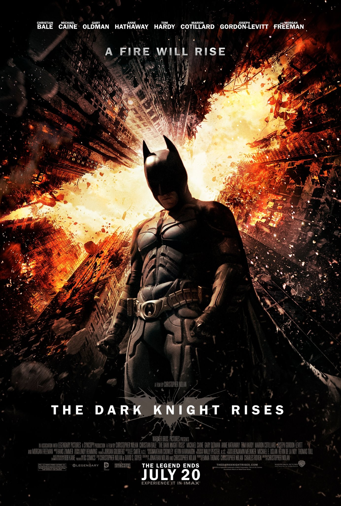

Темный рыцарь: Возрождение легенды The Dark Knight Rises

«Так вот какого это»
Нолан сломал стереотипы кинокомикса, и идёт по своему собственному пути, развивая своё виденье истории и в завершающем фильме. Здесь отсутствуют какие-либо клише, даже типичные "комиксовые" элементы
Нолан умудряется сделать по своему. Сценарий безупречен. Как и в предыдущей части, здесь достаточно длинная завязка, показывающая героев и разные линии событий по отдельности; многим она может показаться затянутой,
но потом, когда линии пересекаются и сюжет изящно выстраивается в одну осмысленную последовательность - оторваться от экрана невозможно ни на секунду. Несмотря на гигантский хронометраж, событий
очень много; их хватило бы на пару-тройку "стандартных" фильмов. Но при этом отсутствует "вода" и какие-либо провисания. Каждая сцена важна для сюжета, причём многие моменты имеют значение для трилогии в целом,
а не только для этого конкретного фильма. Действие затягивает. При этом я говорю не о пресловутом экшене, которого, в классическом его понимании, в первой половине практически нет; я говорю о самой истории. Нолан,
несмотря на жанр, добивается поразительной реалистичности и делает акцент на личности персонажей, а не на стрельбу и взрывы. Главный герой - это Брюс Уэйн, блистательно воссозданный Кристианом Бэйлом,
и мы знаем практически всё о его личности; но его окружение не отходит на второй план; здесь каждый персонаж имеет поразительную глубину, образы прорисованы настолько мастерски, что легко представить героев вне контекста фильма
- ты видишь, что происходящие события лишь небольшая часть их жизни, и это задаёт истории мощнейший драматический фундамент. Фильм раскрывает свою историю через персонажей, их систему ценностей и мировоззрение,
через те решения, которые они вынужденны принимать. На первом месте всегда драма, а не экшн. Сильнейший и
сбалансированный каст не оставляет сомнений в том, что каждый находится на своём месте; и это касается как основных персонажей, так и тех, кому сценарий предусматривает лишь пару реплик, как герои Джуно Темпл и Дэниела Сунджата.
Сложная задача выпала Тому Харди, которому пришлось весь фильм провести в маске, скрывающей его мимику, и, по сути, играть только глазами. И ещё раз повторюсь: сценарий великолепен. Картина не просто предлагает
визуальное удовольствие - сценарий поражает своей глубиной и многослойностью, и обладает достаточной мощью для того, чтобы на полном серьёзе поднимать различные проблемы современного общества, не выглядя при этом глупо. Это делает
картину по-настоящему сложной, наполняет её массой интересного подтекста. Опять же - сначала идеи, а уже потом экшн. Ты видишь историю, видишь героев, видишь общество - всё прописано идеально, и визуализация отходит на второй план
перед драмой; хотя она здесь проработана великолепно, и поражает. Уолли Пфистер, бессменный оператор Нолана, как обычно, показывает свою удивительную способность чувствовать кадр. Большинство зрелищных сцен, включая
эффектное вступление с самолётами было снято на камеры IMAX, и картинка восхитительная, даже без 3D. Это нужно видеть и слышать в IMAX зале, который способен подарить Вам кристально чистое изображение и чистейший звук для великолепной
работы Ханса Циммера. Экшн-сцены выглядят натурально, не в последнюю очередь из-за того что создатели пытались сделать всё что только возможно в реальных декорациях, сведя использование компьютерной графики к минимуму.
Фильм, беря медленный старт вначале, постепенно захватывает и не отпускает. Не отпускает даже после просмотра. Несмотря на почти трёхчасовой хронометраж, на финальных титрах я поймал себя на мысли, что мне не хочется уходить из
зала; что я с радостью посмотрел бы на всё это ещё столько же времени, а может и больше. История действительно цепляет. Нолан очень дотошен в плане сценария, и нельзя не отметить, что его методы воздействия на зрителя кардинально
отличаются от классических. Он очень честен, и никогда не создаёт эмоции искусственно, за счёт 'правильного' саундтрека, или, к примеру, слоу мо. Он говорит со зрителем через личности персонажей, заставляя чувствовать эмоциональную
связь с ними. "The Dark Knight Rises", представляет собой сложнейший комплекс, где глубокие идей идут бок о бок с сильнейшим эмоциональным посылом; где великолепный каст работает на пределе своих возможностей,
и где визуализация прекрасно делает своё дело, не выглядя при этом доминирующим элементом. Один из лучших фильмов года? Несомненно.